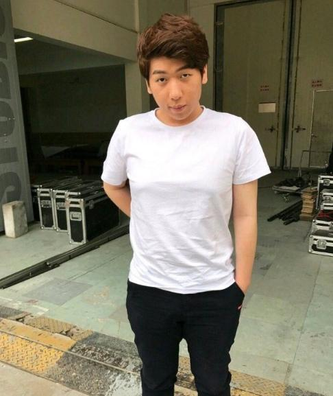

炫神，本名许昊龙，ID：Last 炫神丶 zz，B 站英雄联盟主播，电竞抽象文化、低素质直播代表人物，外号炫狗、龙哥、福州真龙、口水娃，粉丝群体自称炫家军。早年为 S6 高分路人，从未打过职业，后期靠嘴臭、阴阳怪气、攻击职业选手、制造节奏出圈，直播风格攻击性极强，素质低下，是英雄联盟圈争议最大的主播之一。

S6 赛季初期，仅用 3 天 72 局从白金 1 冲上艾欧尼亚王者 320 点，成为当赛季国服首个王者，一度拉开第二名 90 分，是其生涯唯一高光。此后常年复读 “S6 含金量最高”，被观众嘲讽活在过去。
化用 “天不生仲尼，万古如长夜”，被粉丝改编为“天不生我拉斯特炫，国服上单万古长如夜”，后沦为反向嘲讽梗。
因本名许昊龙，直播时常以 “龙哥” 自居，粉丝及部分圈内人跟风称呼，职业选手 Cube 曾在其退网动态下留言 “龙哥，别！”，成为名场面。
早期因嘴臭被观众称为 “炫狗”；直播频繁吸溜口水，被调侃为 “口水娃”。
游戏出门固定喜欢带蓝水晶，被观众戏称为 “祖传蓝水晶”，成为标志性出装梗。
早年上单操作犀利，曾被称作 “小 TheShy”，后期却反咬 TheShy，带头造黑称，彻底翻脸。
每年跨年夜必重讲 “S6 第一个王者” 往事，被粉丝固定称为 “跨年故事会”。
常年自称 “国服第一上单”，实际操作下饭、频繁被单杀，被观众反讽。
在 LPL 二路解说期间，恶意给 TheShy 起黑称“马头”“马脸”，嘲讽长相，并教唆粉丝在赛场刷“马头 NB”，引发大规模愤怒，被官方直接取消解说资格。
进一步衍生侮辱性词汇，带头 P 图、辱骂 TheShy，激化粉丝对立。
被取消解说后，开启黑屏解说辱骂 iG，宣称 iG 输比赛是 “邪不胜正”，并发起抽奖庆祝 iG 对手获胜，要求获奖者不能是 iG 粉丝。
TheShy、Rookie 联合起诉其造谣、侮辱名誉（含造谣 Rookie 卖过期泡面），炫神在住院期间收到律师函，随后私下和解，当场认怂称“TheShy 是我一辈子姜大哥”，转头又破防放狠话。
网友将其与 TheShy粉丝的大规模骂战称为 “第一次 JS（姜神）世界大战”，嘲讽其彻底败退
因 2021MSI Wei 带队击败其喜欢的 DK 选手 ShowMaker，长期阴阳 Wei，称其为“涅槃组打野”。
借游戏《沙威玛传奇》玩谐音，恶意辱骂 Wei 家人，底线极低。
Wei 直播镜头拍到 “炫迈 S” 口香糖，被网友谐音“炫母死”反击，炫神连夜破防、拉黑上千人、关闭评论区。
直播怒喷 Wei，情绪失控，成为经典破防名场面
自创句式：“这就是你龙哥的 XX 啊，真是 AA 又 BB啊”，如：轻轻又松松、先先又攻攻、焦焦又灼灼、简简又单单。
吹嘘英雄克制，实际经常被暴打。
阴阳怪气队友 / 对手的经典句式。
强行装逼失败专用。
炫神粉丝自称，以抽象、攻击性、玩黑梗为核心特征。
直播间经典刷屏弹幕，后扩散成全网抽象梗
嘲讽过度玩炫神梗的人，衍生：别熟了，真不炫。
一次虎牙的直播活动中走出的奇怪姿势步伐
炫家军嘲讽 TheShy 粉丝的黑称缩写。
早年旧照被粉丝翻出，用于调侃青涩时期。
无畏契约中朝队友脚下丢火，路人哭腔吐槽：你个笨蛋奶妈，成梗。
形容其直播间压抑、负能量爆棚的氛围。
早年靠S6 第一个王者获得路人认可；
后期放弃操作，专攻嘴臭、阴阳、攻击选手、制造对立、炒作节奏；
多次被平台处罚、被官方取消解说、被职业选手起诉、被全网指责低素质；
其梗 90% 以上来自辱骂、黑称、破防、嘴硬、背刺、炒作，是电竞抽象文化、低素质直播的标志性人物。